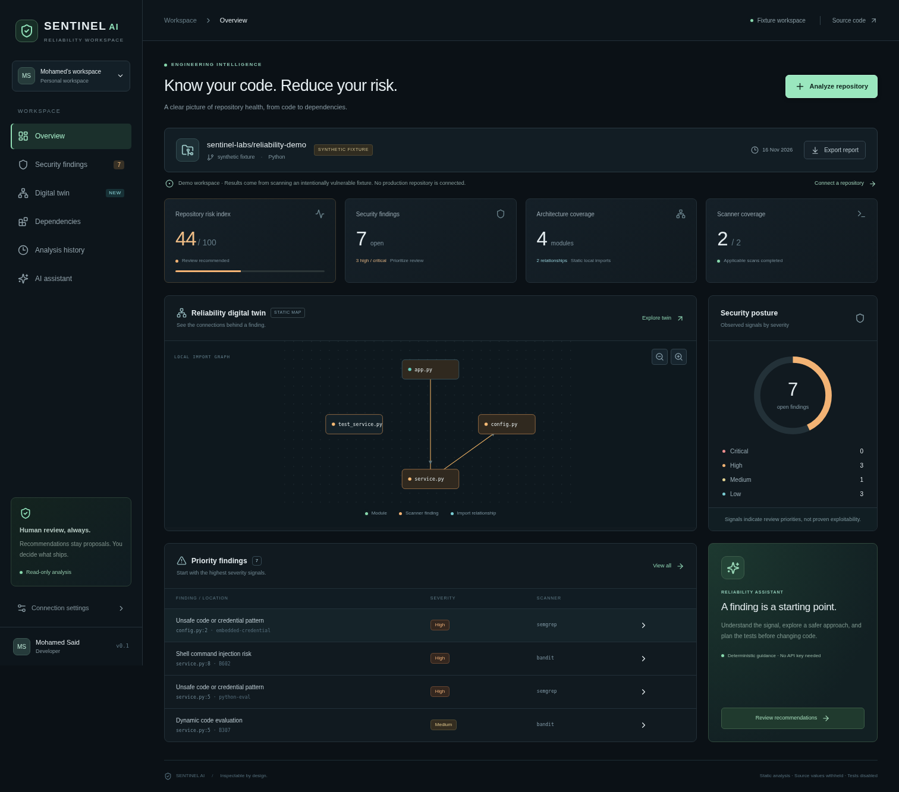

Mohamed Said
Computer ScienceSoftware Engineering Building intelligent systems and scalable software. I study Computer Science at Canadian University Dubai and explore machine learning through practical projects.
Rotating shape with labeled skill nodes. Use the shape buttons below to explore the forms. Drag to rotate
Skills represented across the shapes include Python, Java, C++, TypeScript, Next.js, FastAPI, PostgreSQL, Spring Boot, scikit-learn, Docker Compose, Git, and GitHub Actions.
Core selected
Ideas into working systems. 01 / SOFTWARE 02 / MACHINE LEARNING 03 / SYSTEMS THINKING
01 / SELECTED WORK
Built to be understood. From research baselines to systems you can inspect.
All work 05 Machine learning Software
Showing all 5 projects
MACHINE LEARNING · PHASE 1 Aircraft Engine Predicting remaining useful life from simulated engine sensor measurements. A reproducible Random Forest baseline, built around transparent evaluation.
17.661cycles Root mean squared error
100engines Evaluated in the test set
Python scikit-learn NASA C-MAPSS
Graduation project · Phase 1 baseline on simulated data. Advanced models and deployment are future work.
Explore the graduation project
02 / RELIABILITY ENGINEERING { }
SENTINEL AI Inspect repository security signals and trace possible impact through a static architecture graph. Proposed patches stay under human review.
sentinel / reliability workspace

View screenshot Next.js FastAPI Celery PostgreSQL
03 / EVIDENCE-BASED INVESTIGATION ?
IncidentLens Connect application log failures to permission-filtered runbooks, source citations, and inspectable investigation guidance.
incidentlens / investigation
View screenshot Python FastAPI PostgreSQL
04 / ACCOUNTABLE ACCESS +
AccessLedger Review employee permissions with frozen evidence, assigned decisions, version checks, and an inspectable audit history.
accessledger / access review
View screenshot FastAPI SQLAlchemy PostgreSQL
05 / ASYNCHRONOUS SYSTEMS ~
QueueBridge Follow orders through asynchronous processing: transactional outbox records, duplicate delivery handling, retries, and recovery.
queuebridge / order ledger
View screenshot Java 21 Spring Boot RabbitMQ
02 / THE PERSON BEHIND THE CODE
Curious by nature.Engineer in progress. Mohamed Said — Dubai, UAE
I’m studying Computer Science at Canadian University Dubai , building toward a career in software engineering.
I’m interested in the decisions behind useful software: how data moves, how systems recover, and how people understand what a tool is telling them.
My projects connect programming fundamentals to practical systems, with a growing interest in artificial intelligence and cloud computing.
CURRENT FOCUS Computer Science foundations
LEARNING THROUGH Building, testing & documenting
03 / TECHNICAL TOOLKIT
The tools. The thinking. Built through coursework
Languages & interfaces Programming foundations and interfaces that make the underlying system clear.
Python Java C++ TypeScript HTML / CSS Next.js
Backend & data APIs, relational models, asynchronous workflows, and reproducible machine learning.
FastAPI PostgreSQL SQLAlchemy Spring Boot Celery scikit-learn
Build & verify Version control, explicit migrations, constrained environments, and meaningful checks.
Git Docker Compose Linux pytest Playwright GitHub Actions